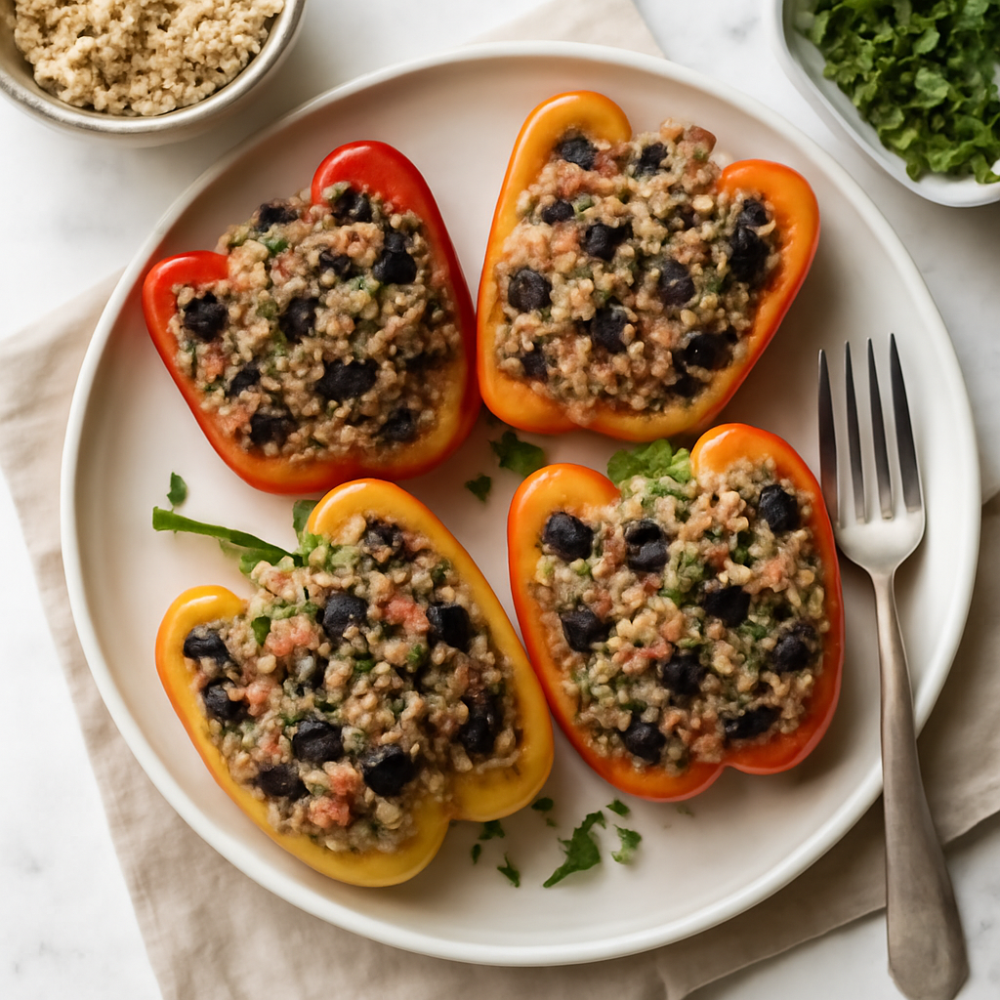

Monday — Quinoa and Black Bean Stuffed Peppers

Cook Time: 35 minutes
Method: Oven
vegetarianquinoahealthy
Ingredients for 6
- 6 bell peppers
- 1 cup quinoa (rinsed)
- 2 cups vegetable broth
- 1 can black beans (15 oz, drained and rinsed)
- 1 tsp cumin
- 1 tsp paprika
- Salt to taste
- 1 cup shredded cheese (optional)
Instructions
- Preheat oven to 375°F (190°C).
- Cook quinoa in vegetable broth according to package instructions.
- Mix cooked quinoa, black beans, cumin, paprika, and salt.
- Cut tops off bell peppers and remove seeds.
- Stuff peppers with quinoa mixture and place in a baking dish.
- Top with cheese, if desired, and bake for 25-30 minutes.
Toddler Notes
- Mash black beans slightly for easier eating.
- Cut peppers into smaller bites after cooking.
← Back to weekly plan